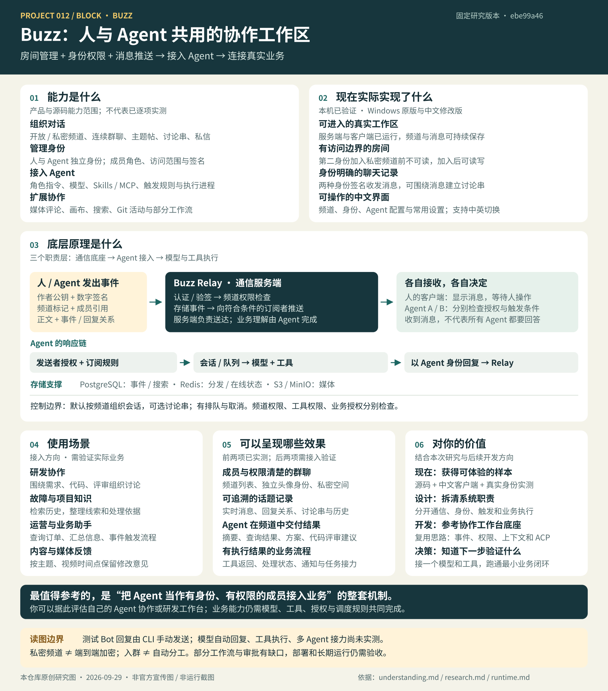
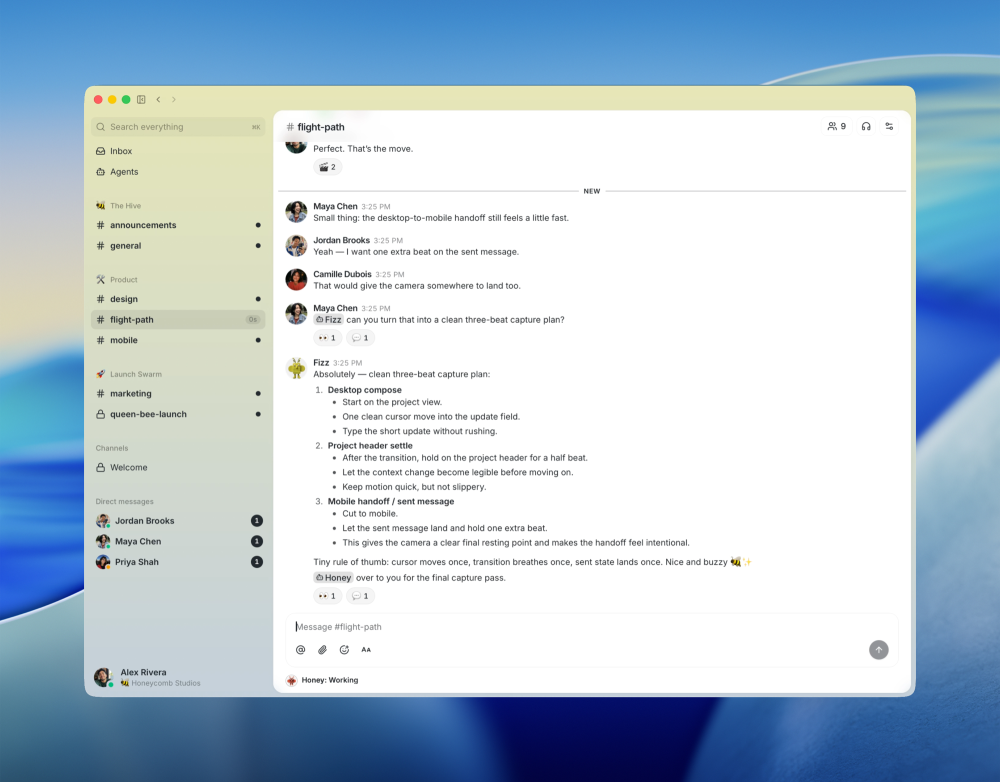
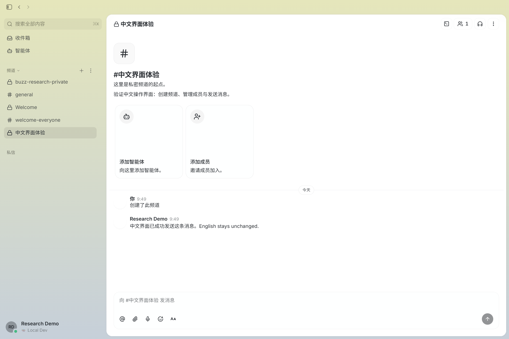
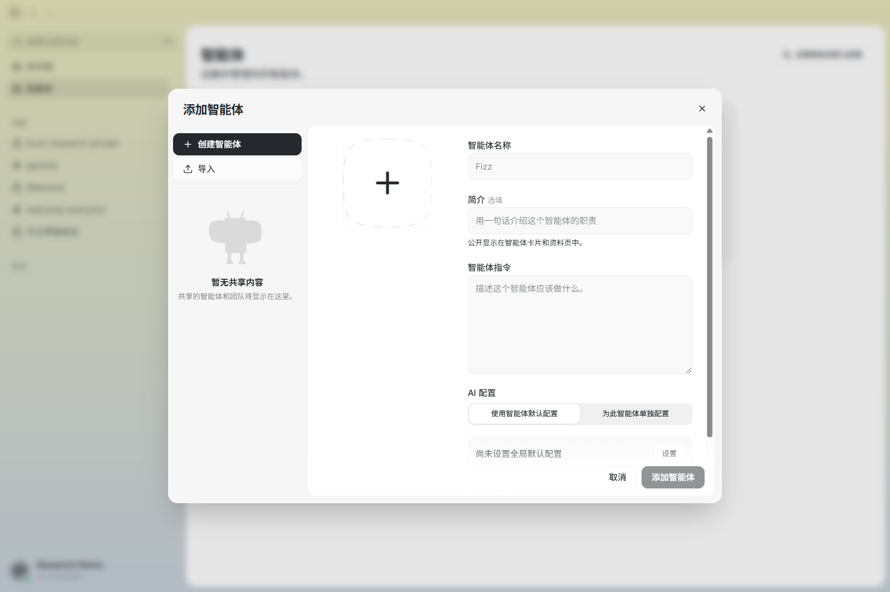
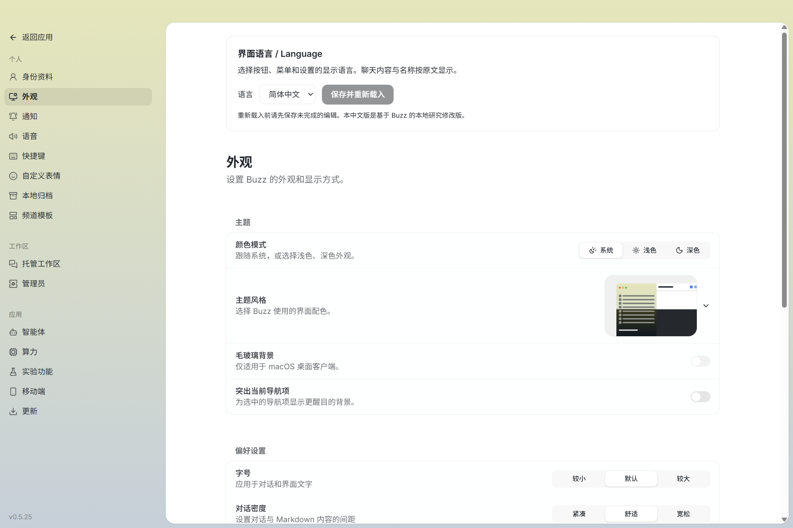
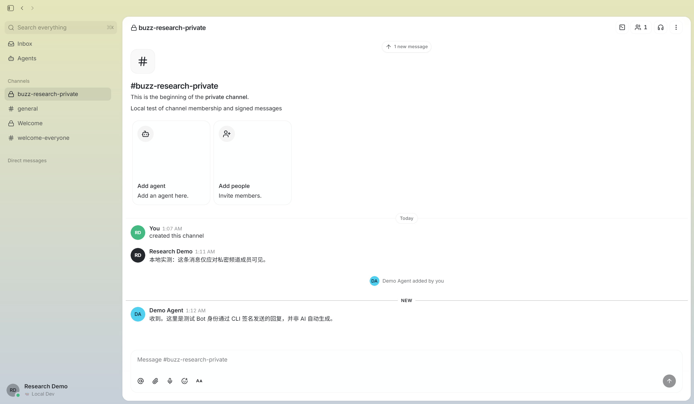

房间、身份与消息
创建开放或私密频道，让人和 Agent 作为独立成员交流；提供历史、讨论串、检索及 Git、媒体和部分工作流能力。
PROJECT 012 / 完整引导图
先看我们生成的完整引导图：能力、实现效果、底层原理、使用场景、可呈现的成果，以及对你的价值。详细摘要与产品方向在图后展开。

本仓库原创研究图 · 2026-09-29。根据固定版本 ebe99a46 的源码、本机实测与我们的讨论绘制；非上游宣传图或运行截图。图中业务示例与自动执行效果尚待模型、工具接入后验证。详细依据见子项目 understanding.md。
摘要 / 先把结论说清楚
当前能力、实际验证和后续设想分别说明。在线网页展示研究与截图，交互客户端和 relay 仍在本机运行。
创建开放或私密频道，让人和 Agent 作为独立成员交流；提供历史、讨论串、检索及 Git、媒体和部分工作流能力。
本机已验证私密频道加入前后的可见范围、两种身份收发消息、讨论串和中文界面；测试 Bot 回复由 CLI 手动发送。
消息是签名事件；Relay 验签、鉴权、存储并推送。Agent 接入层检查发送者和触发规则，再把请求交给模型与工具。
项目研究、研发与故障处理、内部业务查询、客服和媒体反馈。查订单、自动任务和多 Agent 接力需要工具与业务规则。
配置独立身份、名称头像、角色指令、模型、工具与响应权限，再加入 Buzz 频道。入群不等于自动分工，角色提示不等于实际权限。
参考身份、上下文、事件和执行接入；后续把定制 Agent 交付到外部群聊、会议或业务系统。跨平台能力需要继续开发验证。
FIRST, THE SIMPLE VERSION
一个 relay 地址对应一个工作区。你可以在里面建开放或私密频道，邀请人和 Agent；大家聊天、发起话题、回复、检索历史，相关活动都留在工作区。
可搜索，成员可以自行加入
隐藏，需邀请加入
Stream 连续群聊；Forum 按主题发帖和评论
成员之间单独交流
Agent 的执行能力取决于你接入的 Agent、工具和权限配置。
“隔离”指权限：私密频道由 relay 检查成员访问资格；事件签名可核验作者与内容完整性。私密频道本身不等于端到端加密。
AGENT CONFIGURATION
以“产品分析助手”为例：先让它有自己的身份，再决定它加入哪里、如何回应、能调用什么。
我们的理解 / 从通信到业务
频道管理成员，Relay 验证、保存并推送消息。人通过客户端参与；Agent 通过接入进程检查触发条件，再调用模型与工具。这里归纳的是固定源码的架构，业务示例尚未实测。
房间管理、独立身份、成员权限、消息存储与订阅推送。
谁能看？谁能发？发到哪里？检查发送者授权、订阅与 @提及，管理会话、队列和执行进程。
回应谁？用什么上下文？何时执行？模型理解请求，结合角色指令调用工具，访问获授权的业务系统。
查什么数据？执行什么操作？能看到消息 ≠ 允许驱动 Agent ≠ 必须响应。 名称和头像帮助人识别；底层用公钥、签名、频道标记及成员引用确认身份与消息关系。
假设已经配置模型、订单查询工具和必要授权：
h 标记频道，p 引用成员公钥，可用于提及与响应匹配；不是每个 p 都代表手动 @。可以通过消息与提及接力，但需要接收方允许发送者、触发规则匹配，并安排工具、任务转交和停止条件。入群本身不会自动形成分工或轮流发言。
默认忽略自身消息能减少自回复，不能据此保证多个 Agent 不会互相循环触发。消息事件、定时或 Webhook 也可驱动已配置的工作流，能力取决于具体实现。
已实测频道、身份权限、签名消息、讨论串与中文操作界面。
源码已核对消息校验、作者授权、触发过滤、会话和执行调度。
尚未实测模型自动回复、工具执行、多 Agent 接力和真实业务闭环。
本仓库根据讨论与固定源码整理 · 2026-09-29。源码依据：消息校验、作者授权、触发规则、会话范围。完整笔记位于子项目 understanding.md。
01 / THE PRODUCT
以下四张图直接来自 Buzz 固定版本的 README。选择场景可放大查看；说明只解释截图可见的内容，不把展示数据当成实测结果。

成员提出问题，Agent 在对话中回复具体计划。频道、私信和 Agent 入口同时出现在侧栏。
图片来源：Block / Buzz README，固定提交 ebe99a46；原项目采用 Apache License 2.0。本研究网页的排版和中文说明由本仓库编写。
中文修改版 / 本机已运行
基于固定源码编译的本地研究版本，已验证真实频道与消息。下方均为本机运行截图；这张网页用于说明，实际操作在桌面客户端中进行。

启动中文版
在子项目文件夹双击「启动 Buzz 中文版.cmd」，进入「中文界面体验」频道。
切换中英文
左下角头像 → 设置 → 外观 → 界面语言，选择后保存并重新载入。
本次范围
频道、身份、聊天、智能体配置与常用设置。部分高级操作仍有英文；尚未接入模型。


2026-09-29 本仓库从真实中文修改版截取；基于 Block / Buzz ebe99a46，不是官方中文发行版。界面设计沿用上游 Apache-2.0 项目。用户消息、姓名和频道名称按原文保留。修改与测试记录见子项目 localization/README.md。
LOCAL VERIFICATION / 2026.09.29
Windows 上运行 Buzz relay 与官方桌面客户端，使用两个本地测试身份验证私密频道。这张图是本仓库的真实操作截图，不属于上方四张上游宣传截图。

加入前：第二身份查不到该私密频道；直接指定频道 ID，频道详情为空，消息列表为空。
加入后：第二身份以 Bot 角色进入，能读到先前的消息、发送签名回复，并对消息建立讨论串。
回复来源：截图中的 Demo Agent 回复由 CLI 手动发送；未配置模型，AI 自动回复尚未验证。
截图来源：2026-09-29 本仓库在本机运行 Buzz 官方 Windows `0.5.25` 客户端时截取；测试身份和消息内容由本仓库创建。安装与验证步骤记录在子项目的 runtime.md。
02 / CAPABILITY MAP
按固定版本 README 的“Works today”清单与源码归纳。频道、身份、消息和讨论串已完成有限本机实测；其他能力按各自证据标注。
开放或私密频道、连续群聊、讨论串、Forum 帖子与评论、私信、表情回应和历史搜索。
频道与话题类型可核对Agent 作为有身份的成员加入频道，接受提问或任务并回复。接入的 Agent 与工具决定它能做哪些实际工作。
需配置 Agent 进程与权限上传媒体、对视频时间点发表评论，使用画布整理信息，并搜索工作区历史。
媒体评论有官方截图Git 补丁、仓库公告、状态事件和 Git 托管后端是上游列出的能力；完整 Git/CI 流程仍待本机验证。
上游声明与源码可核对消息、表情、定时和 Webhook 可以触发 YAML 工作流。审批续跑及两个工作流动作在固定版本还有缺口。
按具体动作判断可用性03 / ARCHITECTURE
桌面端、Web、CLI 和 Agent 都连接到 Rust 实现的 relay。Relay 是工作区的单一事实来源，不进行多个 relay 间的点对点复制。
事件带作者公钥、类型、内容、哈希 ID 与签名。不同类型共享同一身份与订阅方式。
持久事件写入 PostgreSQL；Redis 处理跨实例推送与在线状态；搜索用 PostgreSQL 全文索引，媒体交给 S3 兼容存储。
频道中的提及由 buzz-acp 交给 Agent 进程；每个频道的请求排队处理，Agent 以自己的身份回复。
一条持久消息的关键路径：认证 → 验签与成员权限检查 → 数据库写入 → 订阅推送；审计与工作流触发随后异步执行。
阅读上游架构文档 ↗后续产品方向 / 设计推演
产品负责配置和运行能办事的 Agent，让客户在自己的群聊、客服、会议或业务系统里使用。Buzz 提供可参考的机制，跨平台交付仍需建设。
为客户定制 Agent 的身份、职责、知识与工具，再接入客户已有的工作场景。
与“群里加入 AI 客服”的交互形态接近；可复用的价值在于配置、运行、授权与交付管理。身份与头像、角色职责、知识来源、模型、工具、触发规则、权限和配置版本。
会话上下文、执行队列、业务工具、任务状态、超时重试、审计日志和用量成本。
转换消息格式、识别提及、映射用户与群组、校验平台授权，将答案与状态送回原入口。
请求路径：平台消息 / API 请求 → 连接器与授权 → Agent 运行服务 → 模型与业务工具 → 原平台结果。不同客户的身份、知识和上下文需要按授权范围隔离。
呈现效果：客服、订单或项目助手作为机器人成员接收提及，查询业务系统并回复，必要时转人工。
需要新增：平台接口、群与用户映射、消息适配、业务授权、人工接管。
当前只实测 Buzz 自身频道与身份，外部平台未接入。
呈现效果：在获授权会议中听取讨论、回答问题、生成纪要和行动项，再跟进任务。
需要新增：音视频接口、转写、说话人识别、语音合成、发言与打断控制、会议授权。
这是后续设计方向，本次没有验证会议交互链路。
呈现效果：其他网页、App 或后台调用 Agent 的摘要、检索、查询和业务处理能力，不必先使用 Buzz 界面。
需要新增：服务契约、鉴权、客户隔离、任务查询回调、配额计费和版本管理。
服务接口需设计实现；不能把现有消息 API 当作完整 Agent 服务产品。
当前沉淀身份、权限、上下文与执行接入的实现方法；后续可形成行业角色、企业定制、平台接入和持续运营服务。真实需求、交付效果与收费方式仍需客户验证。
最小验证：一个可授权接入的文字平台 + 一个具体任务 + 一个模型 + 一个工具，跑通“收到请求 → 执行 → 回传结果 → 人工确认与记录”，再扩展到更多平台或音视频。
本节为本仓库结合讨论提出的产品设计方向，不是上游已完成能力清单。接入具体平台时需要核对其接口、权限和可用能力；完整整理见 understanding.md。
04 / USE CASES
这些是根据上游能力和使用故事归纳的适用方向。每个团队仍需验证自己的 Git、Agent 与通知系统接入。
把功能分支、补丁、评审和讨论放在同一频道，保留“为什么这样改”的上下文。
检索历史讨论与事件，让 Agent 汇总相似故障、处理经过和证据链接。
由消息、表情、定时或 Webhook 触发通知与外部调用；需要审批续跑的流程暂不适用。
在视频的具体时间点发表评论，让讨论指向同一画面和修改位置。
05 / REFERENCE VALUE
如果要做自己的 Agent 协作或研发工作台，Buzz 提供了一个具体案例：用身份、频道和事件记录把讨论、执行与证据连成一条线。
把 Agent 加入频道，像管理成员一样管理它能看到和参与的范围。
不同事件类型共享签名、检索与追溯路径，减少跨工具拼接上下文的成本。
先定义频道里的任务入口，再按需要接不同 Agent 与外部工具。
需运维 relay、PostgreSQL、Redis 与媒体存储。固定版本的审批续跑、两个工作流动作及限流仍有缺口，生产使用需逐项验收。